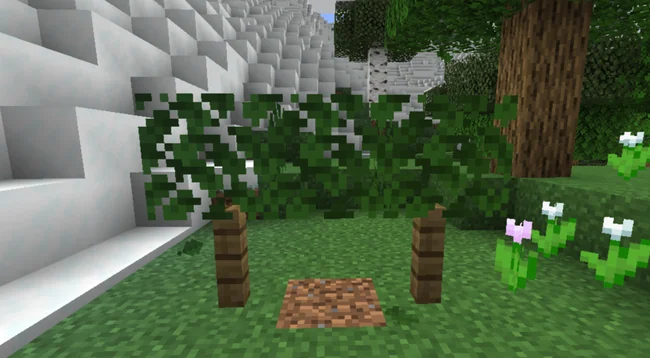
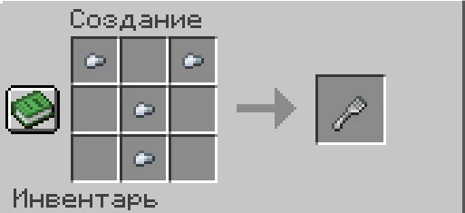

Шпалерные культуры
Установка: поставь листву на забор и нажми по ней ПКМ гаечным ключом. Тип культуры зависит от предмета во второй руке.

| Предмет во второй руке | Культура |
|---|---|
| Пусто | Хмель |
| Сладкие ягоды | Фиолетовый виноград |
| Светящиеся ягоды | Белый виноград |
| Адский нарост | Красный виноград |
| Яблоко | Яблоки |
Стадии роста: росток (0) → листва → плоды (3). Каждая стадия длится приблизительно 3 минуты реального времени при загруженном чанке.
- Костная мука ускоряет рост на 3 минуты за применение.
- ПКМ по зрелому побегу собирает урожай.
- Shift + ПКМ ключом срезает побег.
Приготовление напитков
- Добавь ингредиенты в котёл с водой по одному нажатием ПКМ.
- Скрафти мешалку из 4 железных самородков без формы на верстаке.
- Перемешай содержимое котла мешалкой 3 раза.
- Набери напиток в стеклянные бутылочки до того, как содержимое снова превратится в воду. Скорость розлива влияет на качество — 1–3 звезды.
Рецепт мешалки

| Команда | Назначение |
|---|---|
/drinks level |
Показать текущий уровень хмеля |
Сильный хмель влияет на движение и речь персонажа; при избытке возникает отравление.